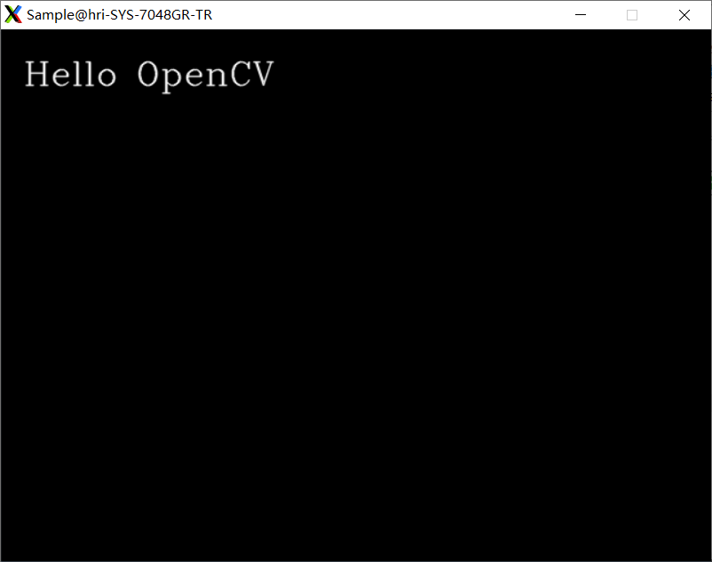

ORB_SLAM2配置
安装工具
下载cmake、gcc、g++和git工具
下载cmake
1 | sudo apt-get install cmake |
下载git
1 | sudo apt-get install git |
下载gcc和g++
1 | sudo apt-get install gcc g++ |
安装Pangolin
先安装依赖项
1 | sudo apt-get install libglew-dev |
下载Pangolin
1 | git clone https://github.com/stevenlovegrove/Pangolin.git |
开始编译
1 | sudo make -j8 |
编译好了后安装
1 | sudo make install |
安装OpenCV
我装的是opencv 3.2.0
1.先安装依赖包
1 | sudo apt install libgtk2.0-dev |
2.到opencv网站下载opencv 3.2.0
https://link.zhihu.com/?target=https%3A//opencv.org/releases.html
3.开始安装
1 | unzip opencv-3.2.0.zip |
4.开始编译
1 | cmake -D CMAKE_BUILD_TYPE=Release -D CMAKE_INSTALL_PREFIX=/usr/local .. |
这里可能会出现 以下问题
Downloading ippicv_linux_20151201.tgz…
CMake Error at 3rdparty/ippicv/downloader.cmake:73 (file):
file DOWNLOAD HASH mismatch
手动下载ippicv_linux_20151201.tgz，替换到opencv-3.2.0/3rdparty/ippicv/downloads/linux-808b791a6eac9ed78d32a7666804320e文件下
1 | sudo make -j8 |
5.添加路径
1 | sudo vim /etc/ld.so.conf.d/opencv.conf |
内容：
/usr/local/lib
6.添加环境变量
1 | sudo vim ~/.profile |
.profile最后一行添加：
PKG_CONFIG_PATH=$PKG_CONFIG_PATH:/usr/local/lib/pkgconfig
export PKG_CONFIG_PATH
7.测试
1 | cd ../samples/cpp/example_cmake |
结果如下说明opencv安装成功

安装Eigen3
1 | sudo apt-get install libeigen3-dev |
安装ROS-melodic
参考以下博文：
https://blog.csdn.net/qq_41450811/article/details/99079041
但是在初始化rosdep的时候，遇到了大麻烦：
ERROR: cannot download default sources list from:
https://raw.githubusercontent.com/ros/rosdistro/master/rosdep/sources.list.d/20-default.list
Website may be down.
网上修改hosts的方法也行不通，最后根据以下博文手动把包下载下来，并修改源码：
https://blog.csdn.net/nanianwochengshui/article/details/105702188
建立ORB-SLAM2
建立ROS工作区catkin_ws
1 | cd ~ |
方法1：复制项目
cd ~/catkin_ws/src
git clone https://github.com/raulmur/ORB_SLAM2.git ORB_SLAM2
但是经常会下载不下来，所以可以用方法2
或者
方法2：将ORB_SLAM2项目下载到~/catkin_ws/src下，解压
1 | cd ORB_SLAM2 |
这时候可能会出现以下问题：
error: ‘usleep’ was not declared in this scope
usleep(3000);
方法：在./include/System.h文件中添加#include
跑MONO_TUM数据集
下载tum数据集http://vision.in.tum.de/data/datasets/rgbd-dataset/download，解压
1 | tar zxvf rgbd_dataset_freiburg3_nostructure_texture_far.tgz -C ./ |
1 | cd ~/catkin_ws/src/ORB_SLAM2/ |
(youyx)
1 | ./Examples/Monocular/mono_tum Vocabulary/ORBvoc.txt ./Examples/Monocular/TUM3.yaml /home/youyx/data/tum/rgbd_dataset_freiburg3_nostructure_texture_far |
(sharon)
1 | ./Examples/Monocular/mono_tum Vocabulary/ORBvoc.txt Examples/Monocular/TUM3.yaml /home/sharon/Documents/rgbd_dataset_freiburg3_nostructure_texture_far/ |
(weip)
1 | ./Examples/Monocular/mono_tum Vocabulary/ORBvoc.txt Examples/Monocular/TUM3.yaml /home/youyx/data/tum/rgbd_dataset_freiburg3_nostructure_texture_far/ |
1 | chmod +x build_ros.sh |
(PS:运行到这里的时候才发现这台新电脑还没装ROS)
fatal error: Eigen3/Core: 没有那个文件或目录
建立软链接
1 | sudo ln -s /usr/include/eigen3/Eigen /usr/include/Eigen |
重新
1 | ./build_ros.sh |
又遇到问题：undefined reference to symbol ‘_ZN5boost6system15system_categoryEv’
方法：在Examples/ROS/ORB_SLAM2/文件夹下的CMakeLists.txt文件中
set(LIBS
${OpenCV_LIBS}
${EIGEN3_LIBS}
${Pangolin_LIBRARIES}
${PROJECT_SOURCE_DIR}/../../../Thirdparty/DBoW2/lib/libDBoW2.so
${PROJECT_SOURCE_DIR}/../../../Thirdparty/g2o/lib/libg2o.so
${PROJECT_SOURCE_DIR}/../../../lib/libORB_SLAM2.so
改为
set(LIBS
${OpenCV_LIBS}
${EIGEN3_LIBS}
${Pangolin_LIBRARIES}
${PROJECT_SOURCE_DIR}/../../../Thirdparty/DBoW2/lib/libDBoW2.so
${PROJECT_SOURCE_DIR}/../../../Thirdparty/g2o/lib/libg2o.so
${PROJECT_SOURCE_DIR}/../../../lib/libORB_SLAM2.so
-lboost_system
)
完成！
用ROS启动ORB_SLAM2
（sharon）
rosrun ORB_SLAM2 Mono /home/sharon/catkin_ws/src/ORB_SLAM2/Vocabulary/ORBvoc.txt /home/sharon/catkin_ws/src/ORB_SLAM2/Examples/Monocular/TUM2.yaml
（youyx）
rosrun ORB_SLAM2 Mono /home/sharon/catkin_ws/src/ORB_SLAM2/Vocabulary/ORBvoc.txt /home/sharon/catkin_ws/src/ORB_SLAM2/Examples/Monocular/TUM2.yaml
跑RGBD_TUM数据集
./Examples/RGB-D/rgbd_tum Vocabulary/ORBvoc.txt ./Examples/RGB-D/TUM2.yaml /home/sharon/Documents/rgbd_dataset_freiburg2_pioneer_360 associations.txt